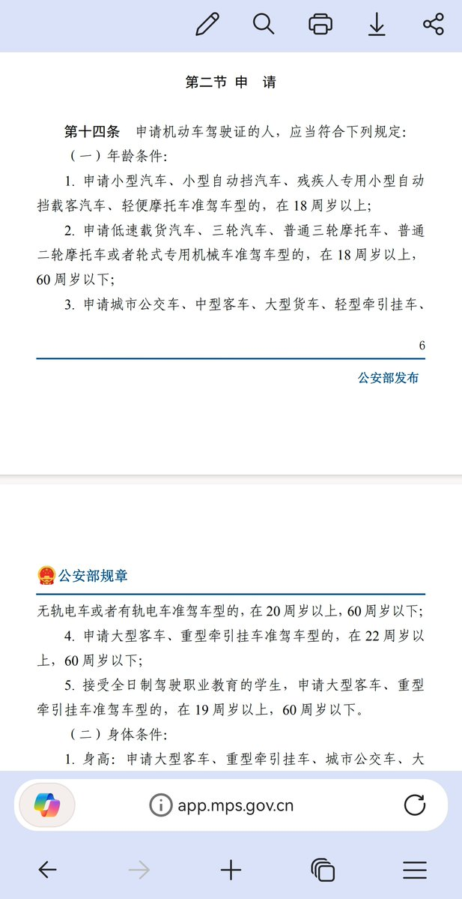

STRIDSFORDON 9040C “Ljusdimma” 🏳️⚧️
@Strf_9040C
“申请小型汽车、小型自动挡汽车、残疾人专用小型自动挡载客汽车、轻便摩托车准驾车型的，在 18 周岁以上”
姐妹2010年七月出生的，2023年8月领证的，那时候你才13周岁
好奇怎么考的，怎么发的证

电子爱好者清正🍥🏳️⚧️
@666666666ZT
持证驾驶，14岁那年考的驾照还是C2D，我可以驾驶电摩和C2自动轿车，因为考过科目一，知道道路交通安全法，知道转弯要打转向灯，变道要打转向灯，实线不能变道虚线可以变道，还有其他的我基本上都知道 https://t.co/cFocV2GgB3